<!DOCTYPE html>
<html lang="pt-BR>
<head>
  <!-- Google Tag Manager -->
<script>(function(w,d,s,l,i){w[l]=w[l]||[];w[l].push({'gtm.start':
new Date().getTime(),event:'gtm.js'});var f=d.getElementsByTagName(s)[0],
j=d.createElement(s),dl=l!='dataLayer'?'&l='+l:'';j.async=true;j.src=
'https://www.googletagmanager.com/gtm.js?id='+i+dl;f.parentNode.insertBefore(j,f);
})(window,document,'script','dataLayer','GTM-M7CTFXW');</script>
<!-- End Google Tag Manager -->
</script>
<script
src='//fw-cdn.com/4525494/3167444.js'
chat='false'>
</script>
  <meta name="facebook-domain-verification" content="28uoss9tmc5b9380frn73cr4dckhje" />
  <meta charset="utf-8">
  <meta content="width=device-width, initial-scale=1.0" name="viewport">

  <title>PrevenClin</title>
  <meta content="" name="description">
  <meta content="" name="keywords">

  <!-- Favicons -->
  <link href="assets/img/prevenclin.ico" rel="icon">
  <link href="assets/img/prevenclin.ico" rel="apple-touch-icon">

  <!-- Google Fonts -->
  <link href="https://fonts.googleapis.com/css?family=Open+Sans:300,300i,400,400i,600,600i,700,700i|Raleway:300,300i,400,400i,500,500i,600,600i,700,700i|Poppins:300,300i,400,400i,500,500i,600,600i,700,700i" rel="stylesheet">

  <!-- Vendor CSS Files -->
  <link href="assets/vendor/fontawesome-free/css/all.min.css" rel="stylesheet">
  <link href="assets/vendor/animate.css/animate.min.css" rel="stylesheet">
  <link href="assets/vendor/bootstrap/css/bootstrap.min.css" rel="stylesheet">
  <link href="assets/vendor/bootstrap-icons/bootstrap-icons.css" rel="stylesheet">
  <link href="assets/vendor/boxicons/css/boxicons.min.css" rel="stylesheet">
  <link href="assets/vendor/glightbox/css/glightbox.min.css" rel="stylesheet">
  <link href="assets/vendor/remixicon/remixicon.css" rel="stylesheet">
  <link href="assets/vendor/swiper/swiper-bundle.min.css" rel="stylesheet">

  <!-- Template Main CSS File -->
  <link href="assets/css/style.css" rel="stylesheet">

  <!-- =======================================================
  * Template Name: Medilab - v4.7.1
  * Template URL: https://bootstrapmade.com/medilab-free-medical-bootstrap-theme/
  * Author: BootstrapMade.com
  * License: https://bootstrapmade.com/license/
  ======================================================== -->
  <script type="text/javascript"> adroll_adv_id = "IOQFG4IZMZG4JNS2TYKAJF"; adroll_pix_id = "C52UM3TTEZF2RCHBVADNKC"; adroll_version = "2.0";  (function(w, d, e, o, a) { w.__adroll_loaded = true; w.adroll = w.adroll || []; w.adroll.f = [ 'setProperties', 'identify', 'track' ]; var roundtripUrl = "https://s.adroll.com/j/" + adroll_adv_id + "/roundtrip.js"; for (a = 0; a < w.adroll.f.length; a++) { w.adroll[w.adroll.f[a]] = w.adroll[w.adroll.f[a]] || (function(n) { return function() { w.adroll.push([ n, arguments ]) } })(w.adroll.f[a]) }  e = d.createElement('script'); o = d.getElementsByTagName('script')[0]; e.async = 1; e.src = roundtripUrl; o.parentNode.insertBefore(e, o); })(window, document); adroll.track("pageView"); </script> 
</head>
<script type="text/javascript" async src="https://d335luupugsy2.cloudfront.net/js/loader-scripts/f1583c97-a735-4e6c-9bea-aaa0eaee3e14-loader.js" ></script>

<body>
<!-- Google Tag Manager (noscript) -->
<noscript><iframe src="https://www.googletagmanager.com/ns.html?id=GTM-M7CTFXW"
height="0" width="0" style="display:none;visibility:hidden"></iframe></noscript>
<!-- End Google Tag Manager (noscript) -->
                                                           
  <!-- ======= Top Bar ======= -->
  <div id="topbar" class="d-flex align-items-center fixed-top">
    <div class="container d-flex justify-content-between">
      <div class="contact-info d-flex align-items-center">
        <i class="bi bi-envelope"></i> <a href="mailto:contato@prevenclin.com.br">contato@prevenclin.com.br</a>
        <i class="bi bi-phone"></i> (92) 3028-1656
      </div>
      <div class="d-none d-lg-flex social-links align-items-center">
        <a href="https://twitter.com/LuisBon71136201" class="twitter"><i class="bi bi-twitter"></i></a>
        <a href="https://www.facebook.com/prevenclin" class="facebook"><i class="bi bi-facebook"></i></a>
        <a href="https://www.instagram.com/prevenclin_coficialnclin" class="linkedin"><i class="bi bi-linkedin"></i></i></a>
        <a href="https://www.youtube.com/channel/UCBCwdjkHMin4t6qpmb6YmvA" class="youtube"><i class="bi bi-youtube"></i></i></a>
        <a href="https://clinicaprevenclin.freshdesk.com/support/home">Central de Ajuda</a>
      </div>
    </div>
  </div>

  <!-- ======= Header ======= -->
  <header id="header" class="fixed-top">
    <div class="container d-flex align-items-center">

      <h1 class="logo me-auto"><a href="index.html">PrevenClin</a></h1>
      <!-- Uncomment below if you prefer to use an image logo -->
      <!-- <a href="index.html" class="logo me-auto"></a>-->

      <nav id="navbar" class="navbar order-last order-lg-0">
        <ul>
          <li><a class="nav-link scrollto active" href="#hero">Início</a></li>
          <li><a class="nav-link scrollto" href="#about">Sobre</a></li>
          <li><a class="nav-link scrollto" href="#services">Serviços</a></li>
          <li><a class="nav-link scrollto" href="#exames">Exames</a></li>
          <li><a class="nav-link scrollto" href="#departments">Tratamentos</a></li>
          <li><a class="nav-link scrollto" href="#doctors">Profissionais</a></li>
          <li><a class="nav-link scrollto" href="#contact">Contato</a></li>
        </ul>
        <i class="bi bi-list mobile-nav-toggle"></i>
      </nav><!-- .navbar -->

      <a href="https://api.whatsapp.com/send?phone=559274006830&text=Olá!%20Gostaria%20de%20agendar%20uma%20consulta" class="appointment-btn scrollto"><span class="d-none d-md-inline">Agendar</span> Consulta</a>

    </div>
  </header><!-- End Header -->

  <!-- ======= Hero Section ======= -->
  <section id="hero" class="d-flex align-items-center">
    <div class="container">
      <h1>Bem vindo à PrevenClin</h1>
      <h2>Fale com nossos médicos sem sair de casa.</h2>
      <a href="#about" class="btn-get-started scrollto">Saiba mais</a>
    </div>
  </section><!-- End Hero -->

  <main id="main">

    <!-- ======= Why Us Section ======= -->
    <section id="why-us" class="why-us">
      <div class="container">

        <div class="row">
          <div class="col-lg-4 d-flex align-items-stretch">
            <div class="content">
              <h3>Por que escolher a PrevenClin?</h3>
              <p>
                A PrevenClin é um centro médico moderno que aborda o conceito e filosofia da medicina integrativa. Assim aliando as necessidades de cada paciente, proporciona atendimento mais completo, complexo e acolhedor sempre respeitando a ética profissional. Nosso compromisso é proporcionar saúde, qualidade de vida, bem-estar e conforto aos nossos pacientes e profissionais.</p>
              <div class="text-center">
                <a href="https://prevenclin.com.br/#about" class="more-btn">Saiba mais<i class="bx bx-chevron-right"></i></a>
              </div>
            </div>
          </div>
          <div class="col-lg-8 d-flex align-items-stretch">
            <div class="icon-boxes d-flex flex-column justify-content-center">
              <div class="row">
                <div class="col-xl-4 d-flex align-items-stretch">
                  <div class="icon-box mt-4 mt-xl-0">
                    <i class="bx bx-receipt"></i>
                    <h4>Equipe</h4>
                    <p>Equipe treinada e altamente qualificada com especialização em medicina integrativa.</p>
                  </div>
                </div>
                <div class="col-xl-4 d-flex align-items-stretch">
                  <div class="icon-box mt-4 mt-xl-0">
                    <i class="bx bx-cube-alt"></i>
                    <h4>Modernidade</h4>
                    <p>Tratamentos modernos que auxiliam na recuperação e bem-estar do paciente.</p>
                  </div>
                </div>
                <div class="col-xl-4 d-flex align-items-stretch">
                  <div class="icon-box mt-4 mt-xl-0">
                    <i class="bx bx-images"></i>
                    <h4>Conforto</h4>
                    <p>Com nosso serviço de home-care, os pacientes podem realizar seus tratamentos no conforto de seu lar.</p>
                  </div>
                </div>
              </div>
            </div><!-- End .content-->
          </div>
        </div>

      </div>
    </section><!-- End Why Us Section -->

    <!-- ======= About Section ======= -->
    <section id="about" class="about">
      <div class="container-fluid">

        <div class="row">
          <div class="col-xl-5 col-lg-6 video-box d-flex justify-content-center align-items-stretch position-relative">
            <a href="https://www.youtube.com/watch?v=jDDaplaOz7Q" class="glightbox play-btn mb-4"></a>
          </div>

          <div class="col-xl-7 col-lg-6 icon-boxes d-flex flex-column align-items-stretch justify-content-center py-5 px-lg-5">
            <h3>Como a Medicina Integrativa ajuda você?</h3>
            <p>A medicina integrativa enxerga e trata o paciente de forma global, buscando prevenir possíveis sintomas que podem surgir devido ao estilo de vida e predisposição genética. Trabalhamos com uma abordagem médica em que o paciente está no centro do cuidado e não a doença.</p>

            <div class="icon-box">
              <div class="icon"><i class="bx bx-fingerprint"></i></div>
              <h4 class="title"><a href="">Importância</a></h4>
              <p class="description">Entenda que ter saúde plena é alcançada quando o paciente tem equilíbrio em todas as áreas (emocional, física e social). Ademais, utiliza-se de tratamentos alternativos para potencializar seus o tratamento impactando positivamente a vida do paciente. </p>
            </div>

            <div class="icon-box">
              <div class="icon"><i class="bx bx-gift"></i></div>
              <h4 class="title"><a href="">Benefícios</a></h4>
              <p class="description">Cuidar do paciente de forma preventiva, aprofundando-se na origem do problema visando o bem-estar físico, emocional e social.</p>
            </div>

            <div class="icon-box">
              <div class="icon"><i class="bx bx-atom"></i></div>
              <h4 class="title"><a href="">Recomendação</a></h4>
              <p class="description">É indicado para todas as pessoas que buscam por uma vida saudável priorizando seu bem-estar e qualidade de vida.</p>
            </div>

          </div>
        </div>

      </div>
    </section><!-- End About Section -->

    <!-- ======= Counts Section ======= -->
    <section id="counts" class="counts">
      <div class="container">

        <div class="row">

          <div class="col-lg-3 col-md-6">
            <div class="count-box">
              <i class="fas fa-user-md"></i>
              <span data-purecounter-start="0" data-purecounter-end="13" data-purecounter-duration="1" class="purecounter"></span>
              <p>Médicos</p>
            </div>
          </div>

          <div class="col-lg-3 col-md-6 mt-5 mt-md-0">
            <div class="count-box">
              <i class="far fa-hospital"></i>
              <span data-purecounter-start="0" data-purecounter-end="2" data-purecounter-duration="1" class="purecounter"></span>
              <p>Unidades</p>
            </div>
          </div>

          <div class="col-lg-3 col-md-6 mt-5 mt-lg-0">
            <div class="count-box">
              <i class="fas fa-flask"></i>
              <span data-purecounter-start="0" data-purecounter-end="11" data-purecounter-duration="1" class="purecounter"></span>
              <p>Exames</p>
            </div>
          </div>

          <div class="col-lg-3 col-md-6 mt-5 mt-lg-0">
            <div class="count-box">
              <i class="fas fa-award"></i>
              <span data-purecounter-start="0" data-purecounter-end="14" data-purecounter-duration="1" class="purecounter"></span>
              <p>Especialidades </p>
            </div>
          </div>

        </div>

      </div>
    </section><!-- End Counts Section -->

    <!-- ======= Services Section ======= -->
    <section id="services" class="services">
      <div class="container">

        <div class="section-title">
          <h2>Serviços</h2>
          <p>A medicina integrativa usa uma abordagem baseada em evidências para tratar a pessoa como um todo – sua mente, corpo e alma. Suas necessidades físicas, emocionais, mentais e espirituais estão todas envolvidas, então a medicina integrativa usa uma combinação de terapias. Ele “integra” abordagens convencionais e terapias complementares para alcançar saúde e cura ideais.</p>
        </div>

        <div class="row">
          <div class="col-lg-4 col-md-6 d-flex align-items-stretch">
            <div class="icon-box">
              <div class="icon"><i class="fas fa-heartbeat"></i></div>
              <h4><a href="">Home Care</a></h4>
              <p>Faça o tratamento no conforto de sua casa.</p>
            </div>
          </div>

          <div class="col-lg-4 col-md-6 d-flex align-items-stretch mt-4 mt-md-0">
            <div class="icon-box">
              <div class="icon"><i class="fas fa-pills"></i></div>
              <h4><a href="">Aplicação de medicamentos</a></h4>
              <p>Os injetáveis são administrados por profissionais altamente capacitados.</p>
            </div>
          </div>

          <div class="col-lg-4 col-md-6 d-flex align-items-stretch mt-4 mt-lg-0">
            <div class="icon-box">
              <div class="icon"><i class="fas fa-hospital-user"></i></div>
              <h4><a href="">Pequenos procedimentos</a></h4>
              <p>Salas equipadas para realização de cirurgia de pequeno porte.</p>
            </div>
          </div>

          <div class="col-lg-4 col-md-6 d-flex align-items-stretch mt-4">
            <div class="icon-box">
              <div class="icon"><i class="fas fa-dna"></i></div>
              <h4><a href="">Consultas</a></h4>
              <p>Agende um horário para consultar seu médico seja  presencial ou por videoconferência.</p>
            </div>
          </div>

          <div class="col-lg-4 col-md-6 d-flex align-items-stretch mt-4">
            <div class="icon-box">
              <div class="icon"><i class="fas fa-wheelchair"></i></div>
              <h4><a href="">Exames</a></h4>
              <p>Faça seu check-up com na PrevenClin, também oferecemos esse serviço home-care.</p>
            </div>
          </div>

          <div class="col-lg-4 col-md-6 d-flex align-items-stretch mt-4">
            <div class="icon-box">
              <div class="icon"><i class="fas fa-notes-medical"></i></div>
              <h4><a href="">Segunda opinião</a></h4>
              <p>A medicina aliada às novas tecnologias tem proporcionado tratamentos mais modernos e menos invasivos, tenha uma outra opinião de um especialista sobre o tratamento mais indicado.</p>
            </div>
          </div>

        </div>

      </div>
    </section><!-- End Services Section -->

    <!-- ======= Exames Section ======= -->
    <section id="exames" class="exames">
      <div class="container-fluid">

        <div class="row">
          <div class="col-xl-5 col-lg-6 video-box d-flex justify-content-center align-items-stretch position-relative">
            <a href="https://www.youtube.com/watch?v=jDDaplaOz7Q" class="glightbox play-btn mb-4"></a>
          </div>

          <div class="col-xl-7 col-lg-6 icon-boxes d-flex flex-column align-items-stretch justify-content-center py-5 px-lg-5">
            <h3>Exames</h3>

            <div class="icon-box">
              <div class="icon"><i class="bx bx-dock-top"></i></div>
              <h4 class="title"><a href="">Dispensa de Agendamento</a></h4>
              <p class="description">Realize a coleta clínica e exames de imagem durante sua consulta.</p>
            </div>

            <div class="icon-box">
              <div class="icon"><i class="bx bx-test-tube"></i></div>
              <h4 class="title"><a href="">Análise</a></h4>
              <p class="description">A análise do exame passa por um processo de dupla verificação: do médico especializado e por um dos profissionais do laboratório.</p>
            </div>

            <div class="icon-box">
              <div class="icon"><i class="bx bx-mail-send"></i></div>
              <h4 class="title"><a href="">Laudo online</a></h4>
              <p class="description">Receba o resultado em um laudo digital, assinado por especialista de saúde, enviado por e-mail.</p>
            </div>

          </div>
        </div>

      </div>
    </section><!-- End About Section -->

    <!-- ======= Departments Section ======= -->
    <section id="departments" class="departments">
      <div class="container">

        <div class="section-title">
          <h2>Tratamentos</h2>
          <p>A saúde integrativa é uma abordagem médica focada na pessoa como um todo, ou seja, ela considera todos os fatores que influenciam a saúde, o bem-estar e a doença do indivíduo. O objetivo não é apenas a cura do paciente, mas torná-lo consciente de que ele é o ator principal do processo, como seu próprio agente de saúde, e estimulá-lo a melhorar seus hábitos.</p>
        </div>

        <div class="row gy-4">
          <div class="col-lg-3">
            <ul class="nav nav-tabs flex-column">
              <li class="nav-item">
                <a class="nav-link active show" data-bs-toggle="tab" href="#tab-1">Enema de Café</a>
              </li>
              <li class="nav-item">
                <a class="nav-link" data-bs-toggle="tab" href="#tab-2">Estimulação Magnética Transcraniana (EMT)</a>
              </li>
              <li class="nav-item">
                <a class="nav-link" data-bs-toggle="tab" href="#tab-3">Soroterapias</a>
              </li>
              <li class="nav-item">
                <a class="nav-link" data-bs-toggle="tab" href="#tab-4">Von Ardenne</a>
              </li>
              <li class="nav-item">
                <a class="nav-link" data-bs-toggle="tab" href="#tab-5">Drenagem Linfática</a>
              </li>
              <li class="nav-item">
                <a class="nav-link" data-bs-toggle="tab" href="#tab-6">Ozonoterapia</a>
                <li class="nav-item">
                  <a class="nav-link" data-bs-toggle="tab" href="#tab-7">Terapias Ortomoleculares</a>
                  <li class="nav-item">
                    <a class="nav-link" data-bs-toggle="tab" href="#tab-8">Acupuntura</a>
                    <li class="nav-item">
                      <a class="nav-link" data-bs-toggle="tab" href="#tab-9">Massoterapia e Reiki</a>
                      <li class="nav-item">
                        <a class="nav-link" data-bs-toggle="tab" href="#tab-10">Fisioterapia Respiratória e Reabilitação Pulmonar</a>
                        <li class="nav-item">
                          <a class="nav-link" data-bs-toggle="tab" href="#tab-11">Bioressonância</a>
                          <li class="nav-item">
                            <a class="nav-link" data-bs-toggle="tab" href="#tab-12">Desintoxicação Global</a>
                            <li class="nav-item">
                              <a class="nav-link" data-bs-toggle="tab" href="#tab-13">Factores de crescimentos plaquetários</a>
                              <li class="nav-item">
                                <a class="nav-link" data-bs-toggle="tab" href="#tab-14">Terapia Neural</a>
            </ul>
          </div>
          <div class="col-lg-9">
            <div class="tab-content">
              <div class="tab-pane active show" id="tab-1">
                <div class="row gy-4">
                  <div class="col-lg-8 details order-2 order-lg-1">
                    <h3>Enema de Café</h3>
                    <p dir="ltr">O Enema de caf&eacute; estimula a produ&ccedil;&atilde;o de Glutathiona no organismo. Assim, proporciona al&iacute;vio da constipa&ccedil;&atilde;o intestinal, tem a&ccedil;&atilde;o antioxidante, reativa&ccedil;&atilde;o do sistema imunol&oacute;gico,auxilia no processo de emagrecimento e desintoxica&ccedil;&atilde;o hep&aacute;tica.</p>

                    <p>O Enema de caf&eacute; estimula a produ&ccedil;&atilde;o de Glutathiona no organismo. A cafe&iacute;na entra em contato com o intestino por meio de uma sonda retal.</p>
                    
                    <p>Alguns dos benef&iacute;cios desse tratamento s&atilde;o:</p>
                    
                    <ul>
                      <li dir="ltr">
                      <p dir="ltr">Al&iacute;vio da constipa&ccedil;&atilde;o intestinal;</p>
                      </li>
                      <li dir="ltr">
                      <p dir="ltr">A&ccedil;&atilde;o antioxidante;</p>
                      </li>
                      <li dir="ltr">
                      <p dir="ltr">Reativa&ccedil;&atilde;o do sistema imunol&oacute;gico;</p>
                      </li>
                      <li dir="ltr">
                      <p dir="ltr">Procedimento complementar ao processo de emagrecimento;</p>
                      </li>
                      <li dir="ltr">
                      <p dir="ltr">Desintoxica&ccedil;&atilde;o hep&aacute;tica.</p>
                      </li>
                    </ul>
                    
                    <address>&nbsp;</address>
                    
                  </div>
                  <div class="col-lg-4 text-center order-1 order-lg-2">
                    
                  </div>
                </div>
              </div>
              <div class="tab-pane" id="tab-2">
                <div class="row gy-4">
                  <div class="col-lg-8 details order-2 order-lg-1">
                    <h3>Estimulação Magnética Transcraniana (EMT)</h3>
                    <p class="fst-italic">Aprovada em 2012 pelo Conselho Federal de Medicina como prática médica no Brasil, a Estimulação Magnética Transcraniana (EMT)</p>
                    <p> A Estimulação Magnética Transcraniana (EMT) é feita por meio de um equipamento que produz estímulos eletromagnéticos para região frontotemporal esquerda do cérebro (alegria e prazer), reduzindo a atividade do lado direito (medo, solidão).&nbsp;</p>
<p>É utilizada para tratar as seguintes doenças:&nbsp;</p>
<ul>
  <li>Depressão, incluindo grave e fármaco resistente</li>
  <li>&nbsp;Transtorno bipolar&nbsp;</li>
  <li>Esquizofrenia&nbsp;</li>
  <li>Alzheimer&nbsp;</li>
  <li>Parkinson.&nbsp;</li>
</ul>
<p>Além disso, há resultados positivos obtidos na reabilitação de pacientes pós AVC e uma extensa lista de outras doenças neurológicas e psiquiátricas. </p>
                  </div>
                  <div class="col-lg-4 text-center order-1 order-lg-2">
                    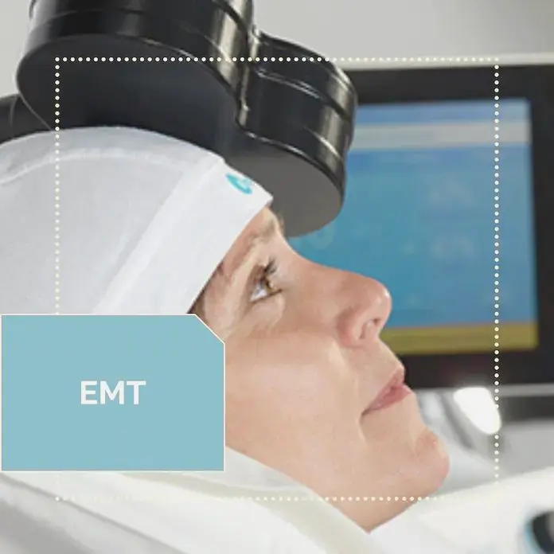
                  </div>
                </div>
              </div>
              <div class="tab-pane" id="tab-3">
                <div class="row gy-4">
                  <div class="col-lg-8 details order-2 order-lg-1">
                    <h3>Soroterapias</h3>
                    <p> É uma excelente opção terapêutica para o paciente, além de ser seguro e eficaz também garante a absorção desses nutrientes pelo organismo, notando-se um processo de restabelecimento da saúde mais rápido. A soroterapia é a administração de injetável de nutrientes, vitaminas, aminoácidos, minerais, antioxidantes etc. ~</p>
                    <p>O objetivo é proporcionar melhor aproveitamento dos nutrientes, pois a infusão feita diretamente na corrente sanguínea, evita perdas ao longo do processo digestivo o que não ocorre na administração por via oral.&nbsp;</p>
                    <p>As terapias injetáveis são indicadas para:&nbsp;</p>
                      <ul>
                          <li>Todas as idades&nbsp;</li>
                          <li>Diversos desequilíbrios relacionados à deficiência nutricional&nbsp;</li>
                          <li>Atuação de forma preventiva. </li>
                        </ul>
                  </div>
                  <div class="col-lg-4 text-center order-1 order-lg-2">
                    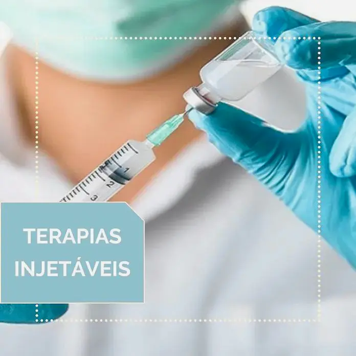
                  </div>
                </div>
              </div>
              <div class="tab-pane" id="tab-4">
                <div class="row gy-4">
                  <div class="col-lg-8 details order-2 order-lg-1">
                    <h3>Von Ardenne</h3>
                    <p>A Oxigenoterapia de Von Ardenne é uma prática da Medicina Biológica Alemã, essa técnica permite o aumento da oxigenação celular e tecidual de forma forte e duradoura. A oxigenoterapia é feita com máscara facial de alta concentração a 7l/min.&nbsp;</p>
                    <p>Alguns dos benefícios desse tratamento são:&nbsp;</p>
                    <ul>
                       <li>Aumento da oxigenação celular e tecidual;&nbsp;</li>
                       <li>Melhora do sistema imunológico;&nbsp;</li>
                       <li>Tratamento de disfunções do envelhecimento, como fadiga, apneia do sono, dentre outras;&nbsp;</li>
                       <li>Aumento do desempenho físico e psíquico;&nbsp;</li>
                       <li>Combate às doenças e sintomas causados pela fraca oxigenação do organismo como, angina, falta de ar e problemas cardiovasculares&nbsp;<br>
                       </ul>
                  </div>
                  <div class="col-lg-4 text-center order-1 order-lg-2">
                    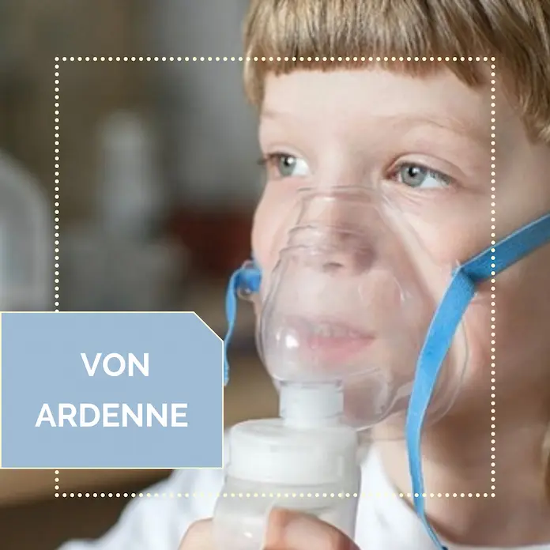
                  </div>
                </div>
              </div>
              <div class="tab-pane" id="tab-5">
                <div class="row gy-4">
                  <div class="col-lg-8 details order-2 order-lg-1">
                    <h3>Drenagem Linfática</h3>
                    <p>A drenagem linfática é uma massagem terapêutica com objetivo de estimular o sistema imunitário e linfático visando eliminar as toxinas produzidas e acumuladas no corpo. É realizada por meio de movimentos suaves e precisos, trabalhando toda a circulação linfática.</p>
                    <p>É recomendada para pessoas com: </p>
                    <ul>
                      <li>Problemas circulatórios, varizes e pernas cansadas;</li>
                      <li>&nbsp;Celulite;</li>
                      <li>&nbsp;Edemas da gravide;</li>
                      <li>&nbsp;Lnfo edemas &nbsp;</li>
                    </ul>
                  </div>
                  <div class="col-lg-4 text-center order-1 order-lg-2">
                    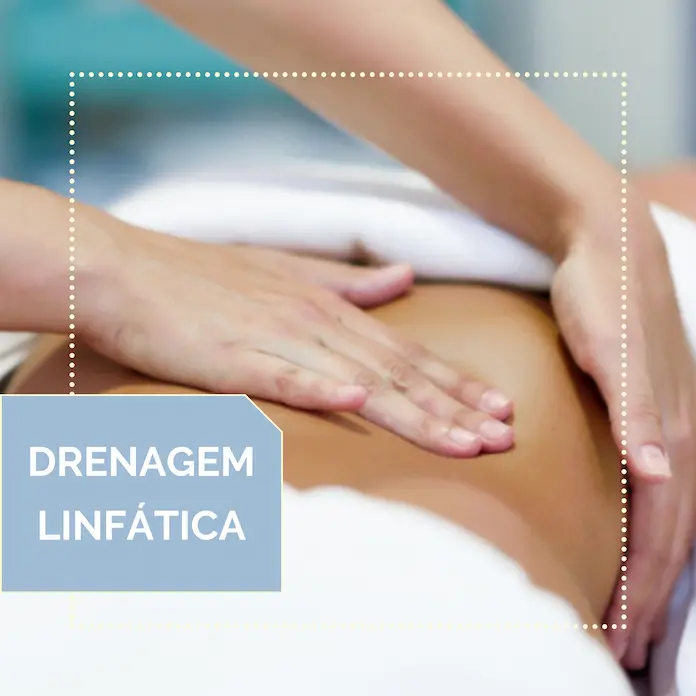
                  </div>
                </div>
              </div>
              <div class="tab-pane" id="tab-6">
                <div class="row gy-4">
                  <div class="col-lg-8 details order-2 order-lg-1">
                    <h3>Ozonoterapia</h3>
                    <p>Ozonioterapia é o tratamento realizado com ozônio medicinal. O objetivo desse tratamento é aumentar a oxigenação dos tecidos auxiliando o organismo no combate a doenças crônicas. É um tratamento seguro com poucos efeitos colaterais.</p>
                    <p>Alguns dos benefícios desse tratamento são: </p>
                    <ul>
                        <li>Rejuvenescimento celular;&nbsp;</li>
                        <li>Oxigenação cutânea;&nbsp;</li>
                        <li>Ativação da circulação sanguínea;&nbsp;</li>
                         <li>Relaxamento muscular;&nbsp;</li>
                         <li>Controle e alívio da ansiedade, insônia e depressão;&nbsp;</li>
                         <li>Diminuição de edemas;&nbsp;</li>
                         <li>Terapia anti-inflamatória. </li>
                        </ul>
                  </div>
                  <div class="col-lg-4 text-center order-1 order-lg-2">
                    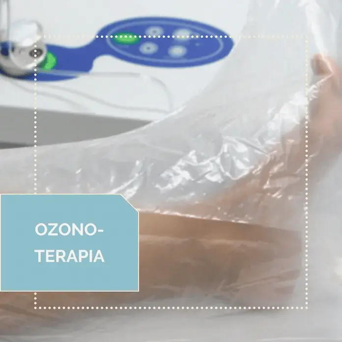
                  </div>
                </div>
              </div>
              <div class="tab-pane" id="tab-7">
                <div class="row gy-4">
                  <div class="col-lg-8 details order-2 order-lg-1">
                    <h3>Terapias Ortomoleculares</h3>
                    <p>As terapias ortomoleculares, baseiam-se na avaliação e manutenção nutricional e bioquímica do corpo humano através de uma alimentação saudável, suplementação de nutrientes essenciais e substâncias naturais quando houver indicação (vitaminas, aminoácidos, oligoelementos e fitoterápicos). </p>
                    <p>Essa reabilitação celular evita que o corpo esteja em um constante processo de inflamação por promover o equilíbrio molecular reduzindo, assim, a quantidade de radicais livres no organismo. &nbsp;</p>
                    <p>Alguns dos benefícios desse tratamento são: </p>
                    <ul>
                      <li>Prevenir o surgimento de algumas doenças comuns do envelhecimento, como: Artrite, Aterosclerose, Cataratas, Alzheimer, Parkinson e Câncer ;&nbsp;</li>
                      <li>Melhora o aspecto da pele, devido ao uso de antioxidantes;&nbsp;</li>
                      <li>Auxilia no emagrecimento.</li>
                      </ul>
                                      </div>
                  <div class="col-lg-4 text-center order-1 order-lg-2">
                    
                  </div>
                </div>
              </div>
              <div class="tab-pane" id="tab-8">
                <div class="row gy-4">
                  <div class="col-lg-8 details order-2 order-lg-1">
                    <h3>Acupuntura</h3>
                    <p class="fst-italic">Originária da China, a acupuntura é uma terapia milenar capaz de tratar diversas doenças físicas ou emocionais.</p>
                    <p>O tratamento consiste na inserção de agulhas em terminações nervosas existentes na pele e em outros tecidos a fim de bloquear os estímulos nervosos até o cérebro. Em pacientes que têm medo de agulhas, pode fazer esse tratamento utilizando o laser.</p>
                    <p>No Brasil, esse tratamento só deve ser utilizado de forma para complementar o tratamento clínico orientado pelo médico.</p>  
                    <p>Alguns dos benefícios desse tratamento são:</p>
                    <ul>
                      <li>Alívio de dores crônicas;</li>
                      <li>Ação analgésica ou anti-inflamatória;</li>
                      <li>Reforça o sistema imunológico;</li>
                      <li>Melhoras problemas respiratórias, oftalmológicas, neurológicos, gastrointestinais e ortopédicos;</li>
                      <li>Auxilia no tratamento de distúrbios de sono e emocionais, como: insônia, ansiedade, excesso de estresse ou depressão;</li>
                      <li>Auxilia no emagrecimento.</li>
                      </ul>
                  </div>
                  <div class="col-lg-4 text-center order-1 order-lg-2">
                    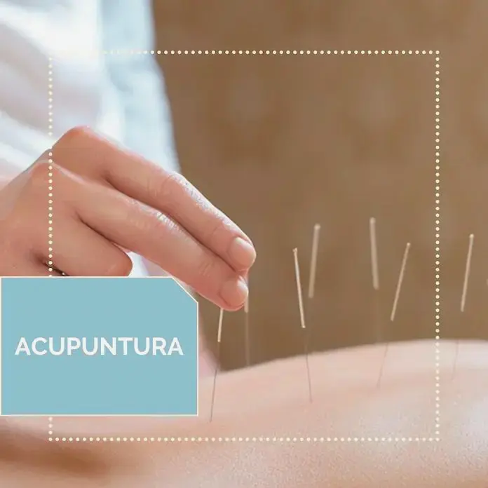
                  </div>
                </div>
              </div>
              <div class="tab-pane" id="tab-9">
                <div class="row gy-4">
                  <div class="col-lg-8 details order-2 order-lg-1">
                    <h3>Massoterapia e Reiki</h3>
                    <p class="fst-italic">A massoterapia e o reiki são tratamentos que diminuem o estresse proporcionam bem estar e relaxamento ao paciente.</p>
                    <p>A massoterapia, também melhora a circulação sanguínea , elimina toxinas no organismo, melhora a flexibilidade corporal e diminui dores e tensões causados pela má postura.</p>
                    <p>Alguns dos benefícios desse tratamento são:</p>
                    <ul>
                      <li>Alivia o estresse;</li>
                      <li>Auxilia no tratamento de distúrbios de sono e emocionais, como: depressão, ansiedade, insônia, doenças psicossomáticas;</li>
                      <li>Melhora o sistema imunológico;</li>
                      <li>Auxilia no controle de dores crônicas;</li>
                      </ul>
                  </div>
                  <div class="col-lg-4 text-center order-1 order-lg-2">
                    
                  </div>
                </div>
              </div>
              <div class="tab-pane" id="tab-10">
                <div class="row gy-4">
                  <div class="col-lg-8 details order-2 order-lg-1">
                    <h3>Fisioterapia Respiratória e Reabilitação Pulmonar</h3>
                    <p>A fisioterapia respirat&oacute;ria consiste em exerc&iacute;cios f&iacute;sicos supervisionados, educa&ccedil;&atilde;o e interven&ccedil;&otilde;es comportamentais para melhorar a capacidade funcional e a qualidade de vida em pacientes com dist&uacute;rbios respirat&oacute;rios cr&ocirc;nicos.</p>
                    <p>No caso de muitos pacientes com dist&uacute;rbios respirat&oacute;rios cr&ocirc;nicos, o tratamento m&eacute;dico alivia apenas parcialmente os sintomas e as complica&ccedil;&otilde;es da doen&ccedil;a. <br /><br />Benef&iacute;cios:</p>
                    <ul>
                    <li>Reduzir a falta de ar</li>
                    <li>Aumentar a toler&acirc;ncia ao exerc&iacute;cio</li>
                    <li>Em menor grau, reduzir o n&uacute;mero de interna&ccedil;&otilde;es</li>
                    </ul>
                  </div>
                  <div class="col-lg-4 text-center order-1 order-lg-2">
                    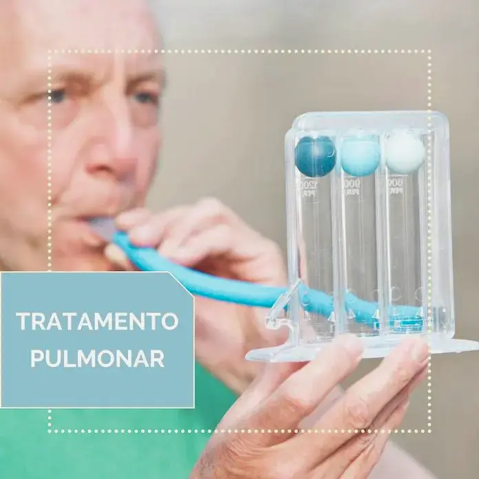
                  </div>
                </div>
              </div>
              <div class="tab-pane" id="tab-11">
                <div class="row gy-4">
                  <div class="col-lg-8 details order-2 order-lg-1">
                    <h3>Bioressonância</h3>
                    <p>A terapia de bioresson&acirc;ncia (do grego bios, vida, e do latim resonare, ressoar) &eacute; uma forma de tratamento em que as ondas eletromagn&eacute;ticas emitidas pelo corpo do paciente s&atilde;o captadas por um dispositivo especial, depois modificadas antes de serem devolvidas ao corpo.</p>
                    <p>O procedimento tamb&eacute;m possibilita o tratamento de ondas ex&oacute;genas, vindas do meio externo.</p>
                    <p>A biorresson&acirc;ncia &eacute; uma aplica&ccedil;&atilde;o n&atilde;o invasiva em que ondas magn&eacute;ticas pulsadas, emitidas por um campo magn&eacute;tico produzido artificialmente, ressoam as frequ&ecirc;ncias naturais das c&eacute;lulas que comp&otilde;em nossos &oacute;rg&atilde;os, da&iacute; o termo resson&acirc;ncia biol&oacute;gica.</p>
                    <p>A biorresson&acirc;ncia magn&eacute;tica &eacute; o efeito da emiss&atilde;o, por um campo magn&eacute;tico produzido artificialmente, de ondas eletromagn&eacute;ticas (OEM) que s&atilde;o ressonantes com as mesmas ondas produzidas pelas c&eacute;lulas do corpo humano: &eacute; como um sinal de r&aacute;dio normal que a c&eacute;lula &eacute; capaz de decodificar para responder adequadamente a voc&ecirc; simplesmente sendo consistentes um com o outro.</p>                  </div>
                  <div class="col-lg-4 text-center order-1 order-lg-2">
                    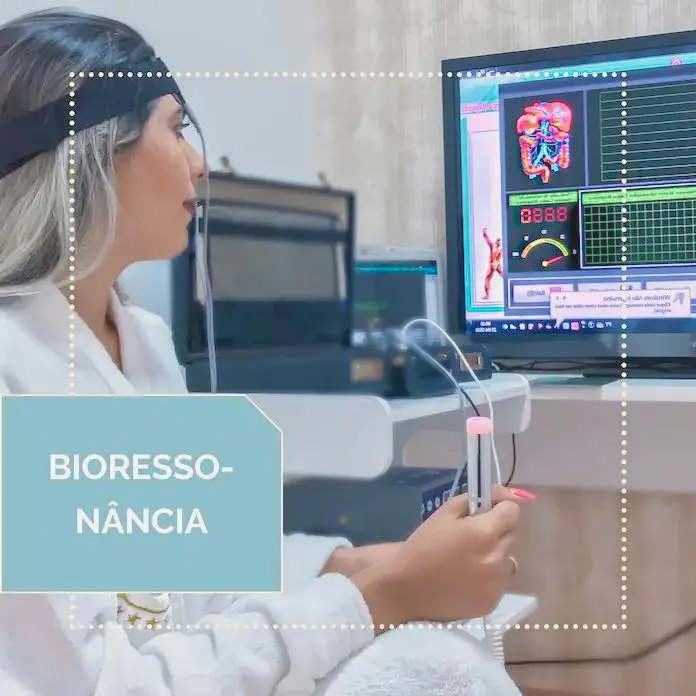
                  </div>
                </div>
              </div>
              <div class="tab-pane" id="tab-12">
                <div class="row gy-4">
                  <div class="col-lg-8 details order-2 order-lg-1">
                    <h3>Desintoxicação Global</h3>
                    <p>Na vida moderna, estamos constantemente expostos a toxinas nocivas no ar, metais pesados na &aacute;gua e pesticidas em nossos alimentos.</p>
                    <p>Acentuadas pela m&aacute; nutri&ccedil;&atilde;o e escolhas de estilo de vida, essas toxinas podem se acumular em nossos corpos para formar altas concentra&ccedil;&otilde;es de toxinas, que por sua vez podem enfraquecer o sistema imunol&oacute;gico e levar a doen&ccedil;as.</p>
                    <p>Qualquer pessoa que queira melhorar sua sa&uacute;de e bem-estar geral pode se beneficiar de tratamentos de desintoxica&ccedil;&atilde;o.</p>
                    <p>Embora esses tratamentos n&atilde;o sejam recomendados para mulheres gr&aacute;vidas ou amamentando, eles podem ser utilizados antes de tentar engravidar para reduzir a carga t&oacute;xica sobre o beb&ecirc;.</p>                  </div>
                  <div class="col-lg-4 text-center order-1 order-lg-2">
                    
                  </div>
                </div>
              </div>
              <div class="tab-pane" id="tab-13">
                <div class="row gy-4">
                  <div class="col-lg-8 details order-2 order-lg-1">
                    <h3>Factores de crescimentos plaquetários</h3>
                    <p>Os fatores de crescimento de plaquetas s&atilde;o obtidos retirando aproximadamente 200 - 250 cc de sangue venoso do paciente. A amostra &eacute; submetida a centrifuga&ccedil;&atilde;o para separar os elementos figurados do soro.</p>
                    <p>Desta forma, obt&eacute;m-se uma fase mais densa e escura, localizada na por&ccedil;&atilde;o mais profunda do tubo de ensaio, representada para a maioria dos eritr&oacute;citos pelos demais elementos figurados do sangue, e uma fase mais l&iacute;quida e semitransparente, colocada superficialmente &agrave; primeira , representado pelo soro sangu&iacute;neo.</p>
                    <p>Devido ao seu peso espec&iacute;fico inferior aos demais elementos ilustrados, as plaquetas est&atilde;o localizadas na &aacute;rea de transi&ccedil;&atilde;o entre a fase s&oacute;lida e a fase mais l&iacute;quida. Por esse motivo, &eacute; poss&iacute;vel retirar o sobrenadante da fase s&oacute;lida, que ser&aacute; composta principalmente de plaquetas, com uma seringa.</p>
                    <p>Cloreto de c&aacute;lcio &eacute; adicionado &agrave; seringa contendo plaquetas concentradas que ir&atilde;o desgranular as plaquetas com a libera&ccedil;&atilde;o dos fatores de crescimento contidos nelas (fatores de crescimento derivados de plaquetas), ent&atilde;o as &aacute;reas doentes do olho e/ou p&aacute;lpebras ser&atilde;o infiltradas.</p>
                    <p>As patologias trat&aacute;veis s&atilde;o &uacute;lceras de c&oacute;rnea e p&aacute;lpebras, cicatrizes (especialmente perioculares muitas vezes intrat&aacute;veis), olhos secos e tratamento p&oacute;s-operat&oacute;rio de patologias como pter&iacute;gio e neoforma&ccedil;&otilde;es conjuntivais.</p>                  </div>
                  <div class="col-lg-4 text-center order-1 order-lg-2">
                    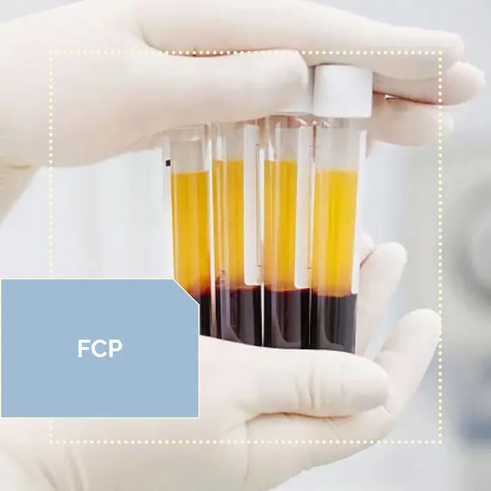
                  </div>
                </div>
              </div>
              <div class="tab-pane" id="tab-14">
                <div class="row gy-4">
                  <div class="col-lg-8 details order-2 order-lg-1">
                    <h3>Terapia Neural</h3>
                    <p>A terapia neural &eacute; um m&eacute;todo de tratamento por si s&oacute;, que consiste em inje&ccedil;&otilde;es feitas com agulhas muito finas de um anest&eacute;sico local em determinados locais do sistema nervoso. A terapia neural pode ser usada para todos os dist&uacute;rbios funcionais, regulat&oacute;rios e informativos do corpo. Com a terapia neural, falamos de tratamentos locais, tratamentos segmentares e tratamentos atrav&eacute;s de um campo de perturba&ccedil;&atilde;o.</p>
                    <p>Os campos de perturba&ccedil;&atilde;o s&atilde;o, por exemplo, cicatrizes ou feridas antigas, ou "restos" de doen&ccedil;as passadas.</p>
                    <p>A terapia neural &eacute; usada durante doen&ccedil;as agudas ou patologias cr&ocirc;nicas (como dores de cabe&ccedil;a, dores nas articula&ccedil;&otilde;es ou nas costas, alergias, doen&ccedil;as de pele, dist&uacute;rbios gastrointestinais).&nbsp;</p>                  </div>
                  <div class="col-lg-4 text-center order-1 order-lg-2">
                    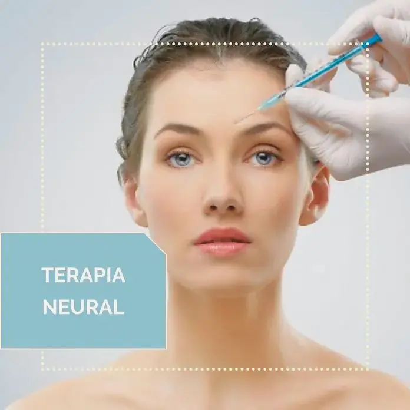
                  </div>
                </div>
              </div>
            </div>
          </div>
        </div>

      </div>
    </section><!-- End Departments Section -->

    <!-- ======= Doctors Section ======= -->
    <section id="doctors" class="doctors">
      <div class="container">

        <div class="section-title">
          <h2>Profissionais</h2>

        </div>

        <div class="row">

          <div class="col-lg-6">
            <div class="member d-flex align-items-start">
              <div class="pic">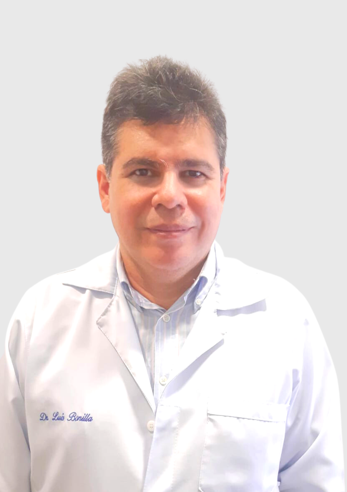</div>
              <div class="member-info">
                <h4>Dr. Luis Federico Bonilla</h4>
                <span>Médico</span>
                <p>Medicina Integrativa e Cirurgião-geral</p>
                <div class="social">
                  <a href=""><i class="ri-twitter-fill"></i></a>
                  <a href=""><i class="ri-facebook-fill"></i></a>
                  <a href=""><i class="ri-instagram-fill"></i></a>
                  <a href=""> <i class="ri-linkedin-box-fill"></i> </a>
                </div>
              </div>
            </div>
          </div>

          <div class="col-lg-6 mt-4 mt-lg-0">
            <div class="member d-flex align-items-start">
              <div class="pic">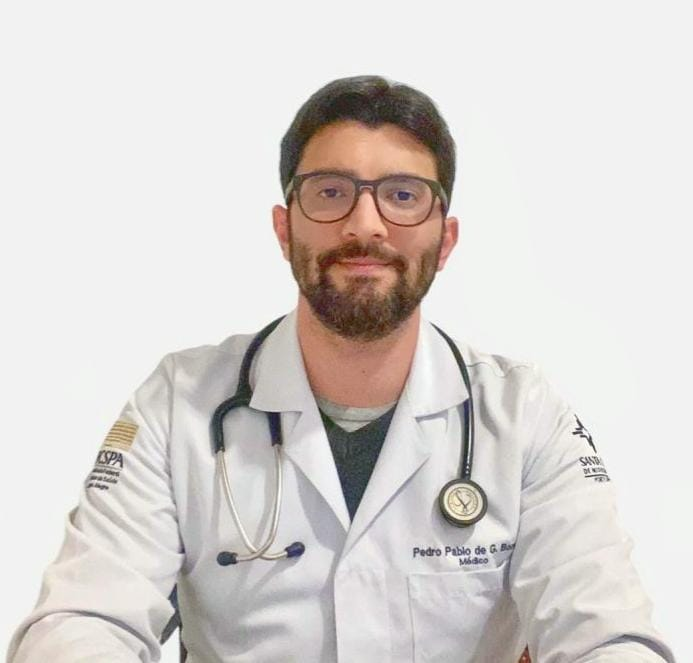</div>
              <div class="member-info">
                <h4>Dr. Pedro Pablo de Gusmão Bonilla</h4>
                <span>Médico</span>
                <p>Medicina Preventiva e Saúde da Família</p>
                <div class="social">
                  <a href=""><i class="ri-twitter-fill"></i></a>
                  <a href=""><i class="ri-facebook-fill"></i></a>
                  <a href=""><i class="ri-instagram-fill"></i></a>
                  <a href=""> <i class="ri-linkedin-box-fill"></i> </a>
                </div>
              </div>
            </div>
          </div>

        </div>

      </div>
    </section><!-- End Doctors Section -->

    <!-- ======= Frequently Asked Questions Section ======= -->
    <section id="faq" class="faq section-bg">
      <div class="container">

        <div class="section-title">
          <h2>Perguntas Frequentes</h2>
          <p>Para evitar qualquer tipo de dúvida, apresentamos algumas perguntas frequentes e suas respostas, para reforçar o seu entendimento.</p>
        </div>

        <div class="faq-list">
          <ul>
            <li data-aos="fade-up">
              <i class="bx bx-help-circle icon-help"></i> <a data-bs-toggle="collapse" class="collapse" data-bs-target="#faq-list-1">Como faço para agendar uma consulta médica?<i class="bx bx-chevron-down icon-show"></i><i class="bx bx-chevron-up icon-close"></i></a>
              <div id="faq-list-1" class="collapse show" data-bs-parent=".faq-list">
                <p>
                  É bem simples! Para ser atendido em consulta médica, seja presencial ou por telemedicina, basta entrar em contato com por meio do Whatsapp, Telefone ou pelo Agendamento On-line; informar a especialidade desejada ou clínico geral. Será disponibilizado o dia da semana e os horários disponíveis, para você agendar.
                </p>
              </div>
            </li>

            <li data-aos="fade-up" data-aos-delay="100">
              <i class="bx bx-help-circle icon-help"></i> <a data-bs-toggle="collapse" data-bs-target="#faq-list-2" class="collapsed">Existe diferença de valores da consulta presencial e por telemedicina?<i class="bx bx-chevron-down icon-show"></i><i class="bx bx-chevron-up icon-close"></i></a>
              <div id="faq-list-2" class="collapse" data-bs-parent=".faq-list">
                <p>
                  Sim, o valor da consulta varia de acordo com a especialidade médica e a modalidade que será realizada. Em geral, a consulta por telemedicina tem menor custo em comparação com a consulta presencial. 
                </p>
              </div>
            </li>

            <li data-aos="fade-up" data-aos-delay="200">
              <i class="bx bx-help-circle icon-help"></i> <a data-bs-toggle="collapse" data-bs-target="#faq-list-3" class="collapsed">Como faço para ter uma segunda opinião médica?<i class="bx bx-chevron-down icon-show"></i><i class="bx bx-chevron-up icon-close"></i></a>
              <div id="faq-list-3" class="collapse" data-bs-parent=".faq-list">
                <p>
                  Para uma segunda opinião médica, é necessário agendar uma consulta médica presencial ou por telemedicina com o médico especialista da área.  Na consulta, é essencial que leve todos os exames realizados até o momento. 
                </p>
              </div>
            </li>

            <li data-aos="fade-up" data-aos-delay="300">
              <i class="bx bx-help-circle icon-help"></i> <a data-bs-toggle="collapse" data-bs-target="#faq-list-4" class="collapsed">Quais documentos eu preciso levar para a primeira consulta?<i class="bx bx-chevron-down icon-show"></i><i class="bx bx-chevron-up icon-close"></i></a>
              <div id="faq-list-4" class="collapse" data-bs-parent=".faq-list">
                <p>
                  No dia da consulta, basta levar seus documentos pessoais: identidade e número de CPF. Não se esqueça dos seus documentos, pois eles são importantes! Se o atendimento é para menores de 18 anos, leve também os documentos dele, inclusive o CPF. Caso tenha algum exame recente, é importante levar para a consulta.

                </p>
              </div>
            </li>

            <li data-aos="fade-up" data-aos-delay="400">
              <i class="bx bx-help-circle icon-help"></i> <a data-bs-toggle="collapse" data-bs-target="#faq-list-5" class="collapsed">Como é feito o pagamento e quais os valores?<i class="bx bx-chevron-down icon-show"></i><i class="bx bx-chevron-up icon-close"></i></a>
              <div id="faq-list-5" class="collapse" data-bs-parent=".faq-list">
                <p>
                  O pagamento pode ser efetuado no mesmo dia da consulta, em dinheiro, cartão ou transferência via PIX! Caso você tenha realizado uma parte do pagamento antecipado, não se preocupe, bastará completar com a diferença.  Nossas consultas médicas tem valores de R$ 120,00 a no máximo R$ 600,00. Exames e tratamentos que podem ser parcelados em até 6x sem juros! Também trabalhamos com planos de consultas médicas, entre em contato para mais informações. 

                </p>
              </div>
            </li>


            <li data-aos="fade-up" data-aos-delay="400">
              <i class="bx bx-help-circle icon-help"></i> <a data-bs-toggle="collapse" data-bs-target="#faq-list-5" class="collapsed">Vocês aceitam plano de saúde?<i class="bx bx-chevron-down icon-show"></i><i class="bx bx-chevron-up icon-close"></i></a>
              <div id="faq-list-5" class="collapse" data-bs-parent=".faq-list">
                <p>
                  Para consultas médicas e tratamentos, não temos convênios com planos de saúde. No entanto, disponibilizamos a Nota Fiscal para que possa pleitear o reembolso junto ao seu plano.
                </p>
              </div>
            </li>

            <li data-aos="fade-up" data-aos-delay="400">
              <i class="bx bx-help-circle icon-help"></i> <a data-bs-toggle="collapse" data-bs-target="#faq-list-5" class="collapsed">Posso fazer tratamentos de injetáveis sem requisição médica?<i class="bx bx-chevron-down icon-show"></i><i class="bx bx-chevron-up icon-close"></i></a>
              <div id="faq-list-5" class="collapse" data-bs-parent=".faq-list">
                <p>
                  Não, para qualquer tipo de tratamento, é preciso ter requisição médica de um especialista em medicina integrativa. Caso ainda não possua essa requisição, é necessário agendar uma consulta médica.                 </p>
              </div>
            </li>


          </ul>
        </div>

      </div>
    </section><!-- End Frequently Asked Questions Section -->

    <!-- ======= Testimonials Section ======= -->
    <section id="testimonials" class="testimonials">
      <div class="container">

        <div class="testimonials-slider swiper" data-aos="fade-up" data-aos-delay="100">
          <div class="swiper-wrapper">

            <div class="swiper-slide">
              <div class="testimonial-wrap">
                <div class="testimonial-item">
                  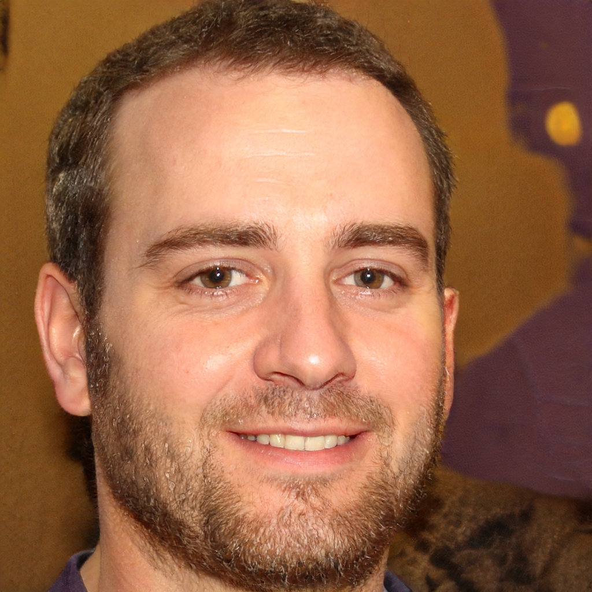
                  <h3>Kaique Lima</h3>
                  <h4>Empresário</h4>
                  <p>
                    <i class="bx bxs-quote-alt-left quote-icon-left"></i>
                    Ótimo atendimento. O que mais facilitou foi a disponibilidade de horário, agendei a consulta 20 minutos antes. O médico fez o diagnóstico e receitou os medicamentos para tratamento. Super recomendo.                    <i class="bx bxs-quote-alt-right quote-icon-right"></i>
                  </p>
                </div>
              </div>
            </div><!-- End testimonial item -->

            <div class="swiper-slide">
              <div class="testimonial-wrap">
                <div class="testimonial-item">
                  
                  <h3>Kasune Yoko</h3>
                  <h4>Bióloga</h4>
                  <p>
                    <i class="bx bxs-quote-alt-left quote-icon-left"></i>
                    Gostei muito da consulta o doutor Pedro é ótimo ele presta atenção no que agente fala e também se importa com o paciente logo encaminha quando é preciso .
                    <i class="bx bxs-quote-alt-right quote-icon-right"></i>
                  </p>
                </div>
              </div>
            </div><!-- End testimonial item -->

            <div class="swiper-slide">
              <div class="testimonial-wrap">
                <div class="testimonial-item">
                  
                  <h3>Agatha Silva</h3>
                  <h4>Arquiteta</h4>
                  <p>
                    <i class="bx bxs-quote-alt-left quote-icon-left"></i>
                    É um profissional muito atencioso, veio a nossa e teve todo o cuidado de realizar os procedimentos clínicos necessário, prescreveu remédio e exame. Depois mandou mensagem para saber se havíamos melhorado. Para mim, fez toda a diferença.
                    <i class="bx bxs-quote-alt-right quote-icon-right"></i>
                  </p>
                </div>
              </div>
            </div><!-- End testimonial item -->

            <div class="swiper-slide">
              <div class="testimonial-wrap">
                <div class="testimonial-item">
                  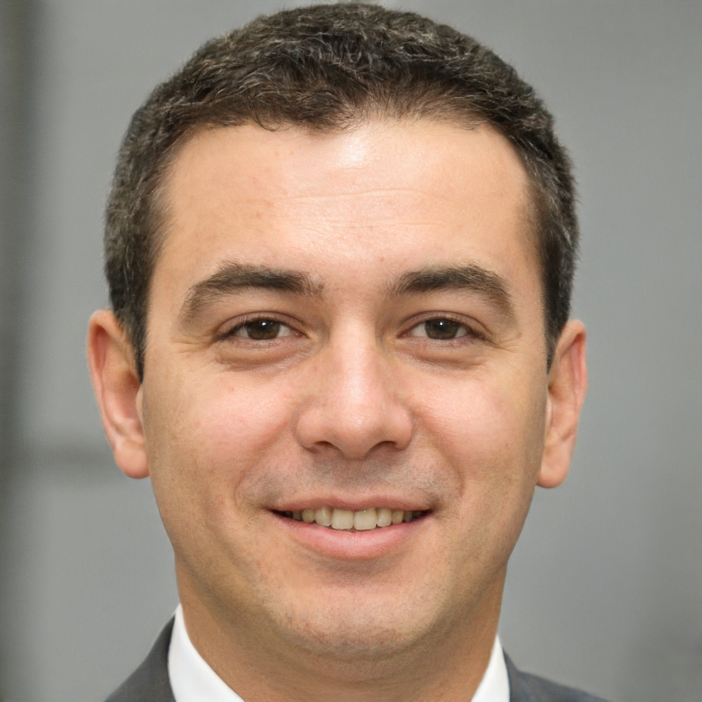
                  <h3>José Silva</h3>
                  <h4>Advogado</h4>
                  <p>
                    <i class="bx bxs-quote-alt-left quote-icon-left"></i>
                    Gostei muito da consulta com o Dr. Pedro, médico atencioso e paciente, escutou todo meu relato e me atendeu prontamente!
                    <i class="bx bxs-quote-alt-right quote-icon-right"></i>
                  </p>
                </div>
              </div>
            </div><!-- End testimonial item -->

            <div class="swiper-slide">
              <div class="testimonial-wrap">
                <div class="testimonial-item">
                  
                  <h3>Ana Clara da Cruz</h3>
                  <h4>Aposentada</h4>
                  <p>
                    <i class="bx bxs-quote-alt-left quote-icon-left"></i>
                    Muito atencioso e competente. Acertou na conduta e logo melhorei.Agendamento rápido e resolução. Médico maravilhoso!
                    <i class="bx bxs-quote-alt-right quote-icon-right"></i>
                  </p>
                </div>
              </div>
            </div><!-- End testimonial item -->

          </div>
          <div class="swiper-pagination"></div>
        </div>

      </div>
    </section><!-- End Testimonials Section -->

    <!-- ======= Contact Section ======= -->
    <section id="contact" class="contact">
      <div class="container">

        <div class="section-title">
          <h2>Contato</h2>
          <p>Dúvidas, sugestões, reclamações? Se houver algo em que possamos ajudá-lo, informe-nos. Teremos todo o gosto em oferecer-lhe a nossa ajuda.</p>
        </div>
      </div>

      <div class="container">
        <div class="row mt-5">

          <div class="col-lg-4">
            <div class="info">
              <div class="address">
                <i class="bi bi-geo-alt"></i>
                <h4>Unidade Ponta Negra:</h4>
                <p>Av. Cel. Teixeira, 6225, Britannia Park Offices, Torre Stamford, Sala 09 - Ponta Negra, Manaus - AM, CEP 69037-000.</p>
              </div>

              <br>

              

            </div>

          </div>

          <div class="col-lg-8 mt-5 mt-lg-0">

            <form action="forms/contact.php" method="post" role="form" class="php-email-form">
              <div class="row">
                <div class="col-md-6 form-group">
                  <input type="text" name="name" class="form-control" id="name" placeholder="Seu nome" required>
                </div>
                <div class="col-md-6 form-group mt-3 mt-md-0">
                  <input type="email" class="form-control" name="email" id="email" placeholder="Seu email" required>
                </div>
              </div>
              <div class="form-group mt-3">
                <input type="text" class="form-control" name="subject" id="subject" placeholder="Assunto" required>
              </div>
              <div class="form-group mt-3">
                <textarea class="form-control" name="message" rows="5" placeholder="Mensagem" required></textarea>
              </div>
              <div class="my-3">
                <div class="loading">Carregando</div>
                <div class="error-message"></div>
                <div class="sent-message">Sua mensagem foi enviada. Obrigada!</div>
              </div>
              <div class="text-center"><button type="submit">Enviar mensagem</button></div>
            </form>

          </div>

        </div>

      </div>
    </section><!-- End Contact Section -->

  </main><!-- End #main -->

  <!-- ======= Footer ======= -->
  <footer id="footer">

    <div class="footer-top">
      <div class="container">
        <div class="row">

          <div class="col-lg-3 col-md-6 footer-contact">
            <h3>PrevenClin</h3>
            <p>
              <strong>CNPJ:</strong> 20.085.140/0001-17<br>
              <strong>Telefone:</strong> (92) 3028-1656<br>
              <strong>Email:</strong> contato@prevenclin.com.br<br>
            </p>
          </div>

          <div class="col-lg-2 col-md-6 footer-links">
            <h4>Navegue</h4>
            <ul>
              <li><i class="bx bx-chevron-right"></i> <a href="https://www.prevenclin.com.br">Início</a></li>
              <li><i class="bx bx-chevron-right"></i> <a href="#about">Sobre</a></li>
              <li><i class="bx bx-chevron-right"></i> <a href="#services">Serviços</a></li>
              <li><i class="bx bx-chevron-right"></i> <a href="#exames">Exames</a></li>
              <li><i class="bx bx-chevron-right"></i> <a href="#departments">Tratamentos</a></li>
              <li><i class="bx bx-chevron-right"></i> <a href="#doctors">Profissionais</a></li>
              <li><i class="bx bx-chevron-right"></i> <a href="#faq">Perguntas Frequentes</a></li>
              <li><i class="bx bx-chevron-right"></i> <a href="#contact">Contato</a></li>
            </ul>
          </div>

          <div class="col-lg-3 col-md-6 footer-links">
            <h4>Recursos</h4>
            <ul>
              <li><i class="bx bx-chevron-right"></i> <a href="https://api.whatsapp.com/send?phone=559230281656&text=Ol%C3%A1!%20Gostaria%20de%20agendar%20uma%20consulta">Agendamento Online</a></li>
              <li><i class="bx bx-chevron-right"></i> <a href="https://assinaturadigital.iti.gov.br/">Validador de documentos</a></li>
              <li><i class="bx bx-chevron-right"></i> <a href="https://clinicaprevenclin.freshdesk.com/a/solutions/articles/151000062325">Termos de Serviço</a></li>
              <li><i class="bx bx-chevron-right"></i> <a href="https://clinicaprevenclin.freshdesk.com/a/solutions/articles/151000062324">Política de privacidade</a></li>
              <li><i class="bx bx-chevron-right"></i> <a href="https://clinicaprevenclin.freshdesk.com/support/home">Central de Ajuda</a></li>
              <li><i class="bx bx-chevron-right"></i> <a href="https://prevenclin.freshteam.com/jobs">Trabalhe Conosco</a></li>
              
            </ul>
          </div>

          <div class="col-lg-4 col-md-6 footer-newsletter">
            <h4>Inscreva-se em nossa newsletter</h4>
            <p>Acompanhe nosso blog</p>
            <form action="" method="post">
              <input type="email" name="email"><input type="submit" value="Assine">
            </form>
          </div>

        </div>
      </div>
    </div>

    <div class="container d-md-flex py-4">

      <div class="me-md-auto text-center text-md-start">
        <div class="copyright">
          &copy; Direitos Autorais <strong><span>PrevenClin</span></strong>. Todos os direitos reservados.
        </div>
        
      </div>
      <div class="social-links text-center text-md-right pt-3 pt-md-0">
        <a href="https://twitter.com/LuisBon71136201" class="twitter"><i class="bx bxl-twitter"></i></a>
        <a href="https://www.facebook.com/prevenclin" class="facebook"><i class="bx bxl-facebook"></i></a>
        <a href="https://www.instagram.com/prevenclin_oficial/" class="instagram"><i class="bx bxl-instagram"></i></a>
        <a href="https://www.linkedin.com/company/prevenclin" class="linkedin"><i class="bx bxl-linkedin"></i></a>
        <a href="https://www.youtube.com/channel/UCBCwdjkHMin4t6qpmb6YmvA" class="youtube"><i class="bx bxl-youtube"></i></a>
      </div>
    </div>
  </footer><!-- End Footer -->

  <div id="preloader"></div>
  <a href="#" class="back-to-top d-flex align-items-center justify-content-center"><i class="bi bi-arrow-up-short"></i></a>

  <!-- Vendor JS Files -->
  <script src="assets/vendor/purecounter/purecounter.js"></script>
  <script src="assets/vendor/bootstrap/js/bootstrap.bundle.min.js"></script>
  <script src="assets/vendor/glightbox/js/glightbox.min.js"></script>
  <script src="assets/vendor/swiper/swiper-bundle.min.js"></script>
  <script src="assets/vendor/php-email-form/validate.js"></script>

  <!-- Template Main JS File -->
  <script src="assets/js/main.js"></script>
  

</body>

</html>
